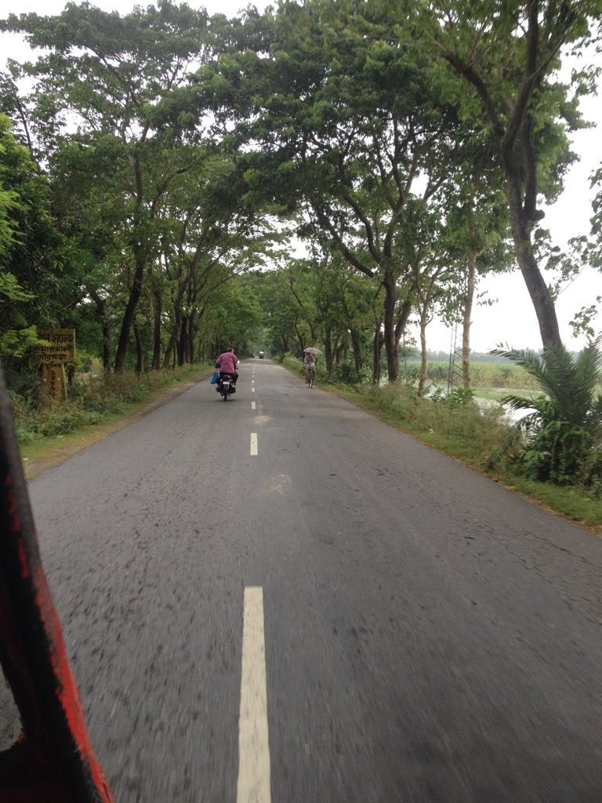
Highways & Motorways
Feasibility studies, engineering design, construction supervision, and maintenance management for expressways, national highways, and urban road networks.
REDS provides a comprehensive range of engineering, planning, and socio-economic services for infrastructure and development projects from concept to completion.

Feasibility studies, engineering design, construction supervision, and maintenance management for expressways, national highways, and urban road networks.
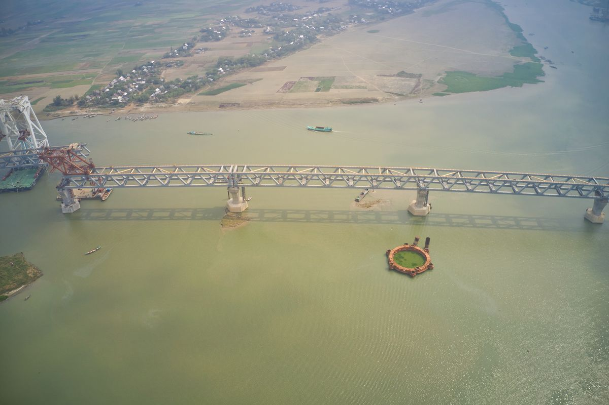
Design and construction support for bridges, overpasses, culverts, and major structural works, including structural analysis and seismic considerations.
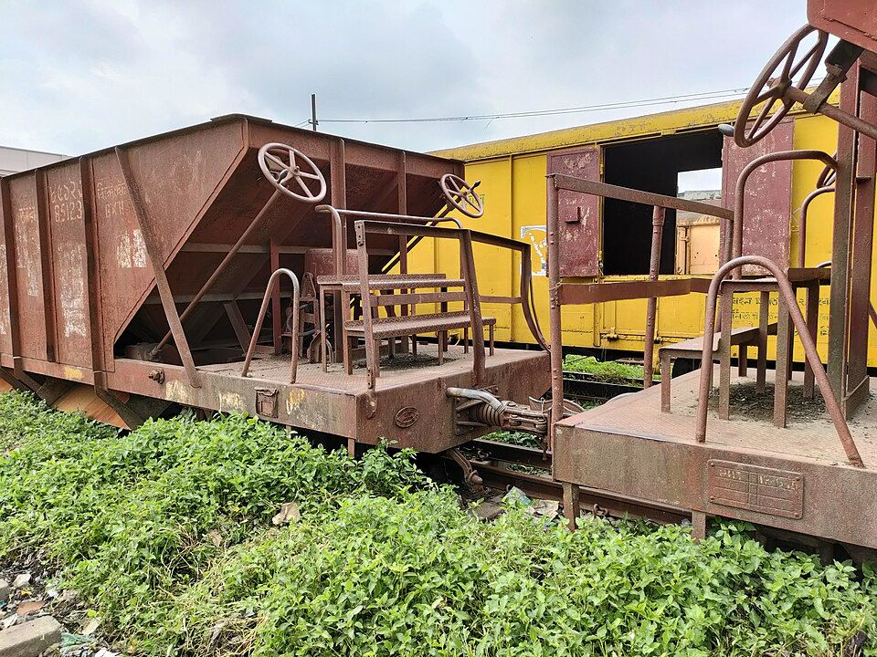
Project development from feasibility to detailed design and procurement, covering track alignment, station planning, and rail systems integration.
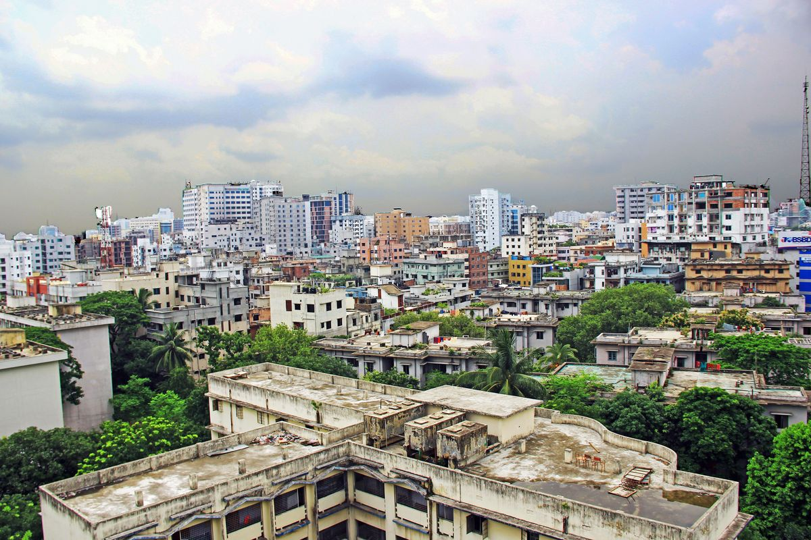
Master plans for townships, industrial zones, and university complexes, plus architectural design for institutional, commercial, and residential buildings.
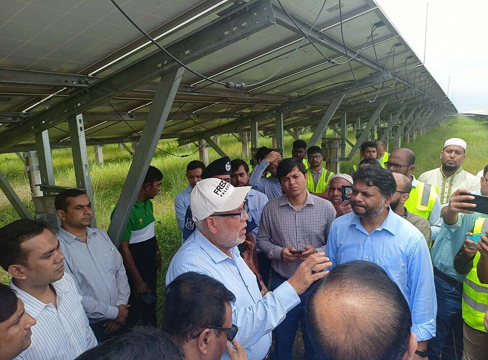
Energy concepts and implementation for increasing demand, including power generation, renewable energy planning, and energy efficiency studies.
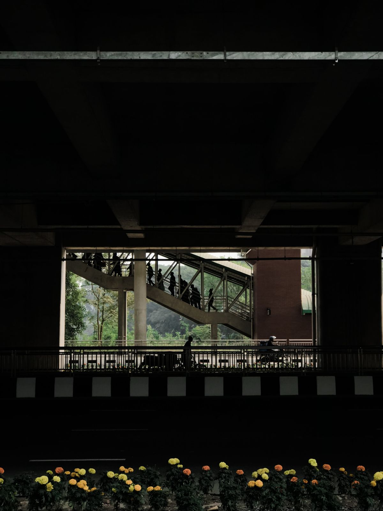
Urban mobility planning to reduce journey times, ease congestion, and promote sustainable transport systems including BRT and mass transit.
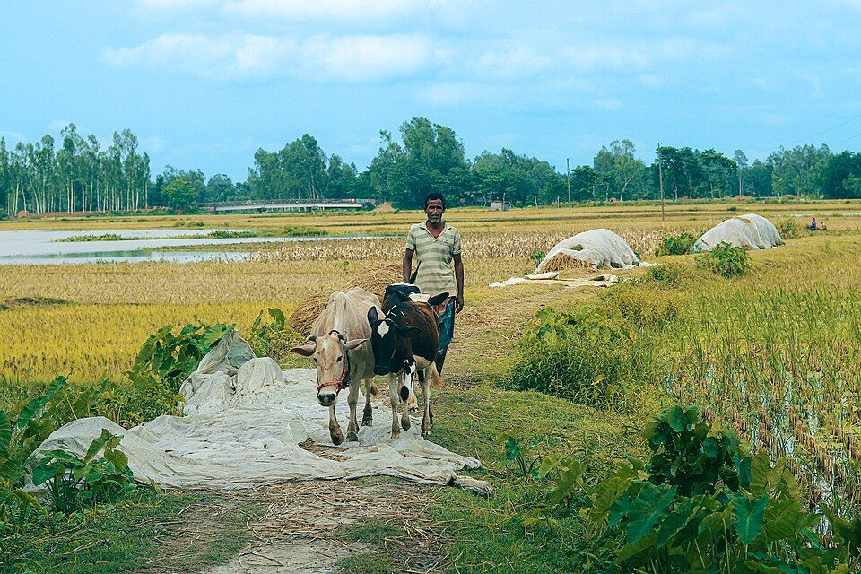
Feasibility studies, financial requirements, economic impact assessments, and social impact evaluations for development and infrastructure projects.
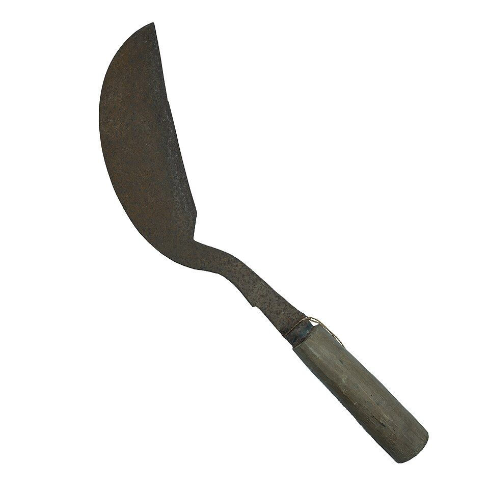
Balancing growth with resiliency and environmental compliance, including environmental impact assessments, mitigation planning, and climate adaptation.
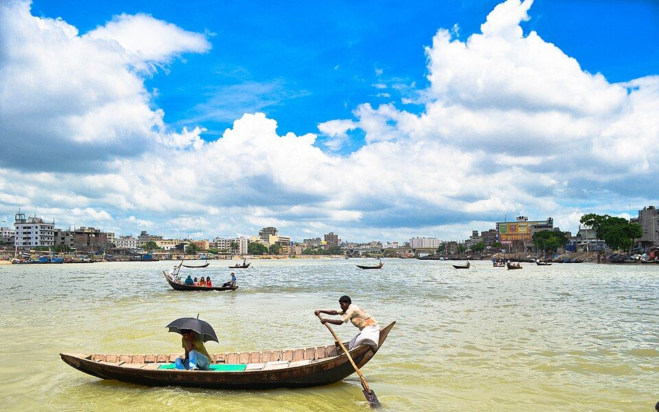
Flood flow discharge studies, river basin management, irrigation and drainage design, bank protection, and water conservation projects.
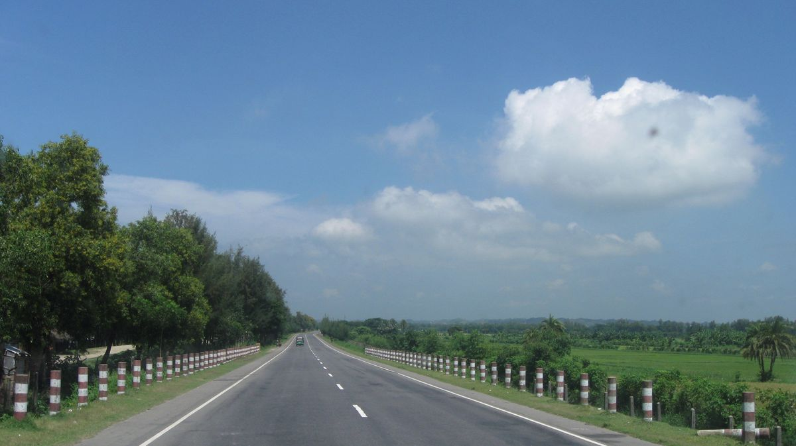
Port planning, berth design, cargo handling studies, and marine infrastructure development for coastal and inland waterway terminals.
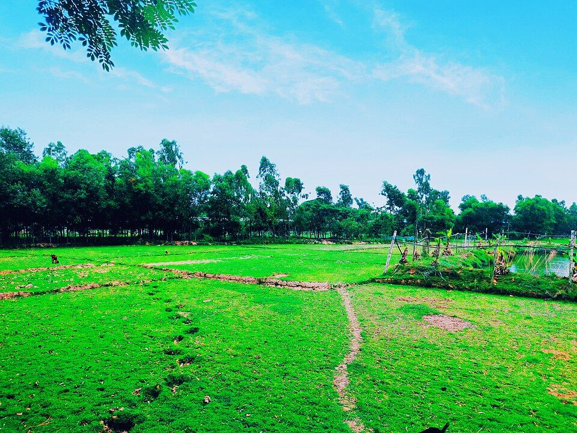
Rural healthcare, education, infrastructure, and poverty reduction programs, including community-driven development and agricultural support.
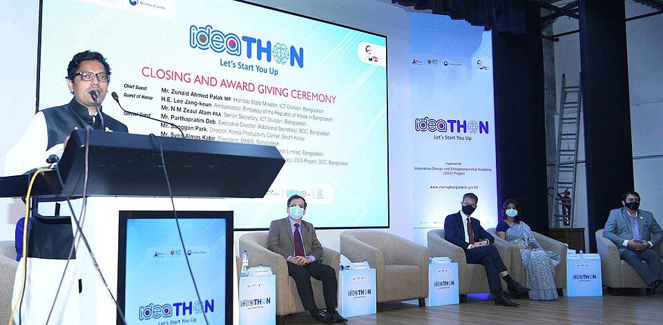
Creating effective technical teams and digital solutions for commercial and engineering projects, including IT infrastructure and project management systems.